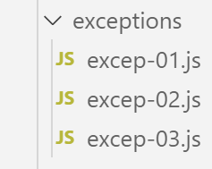
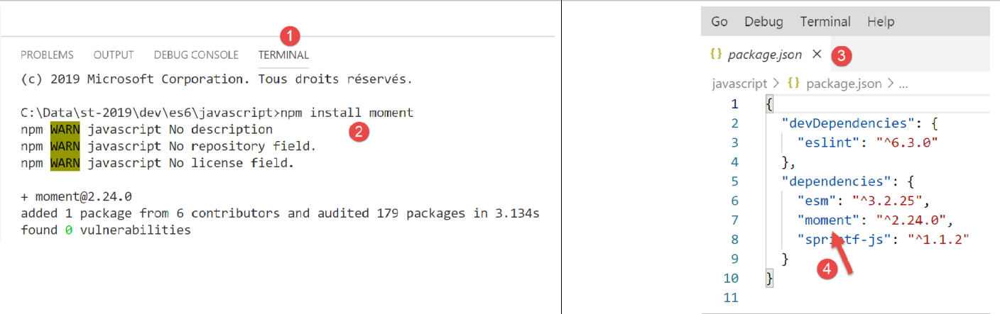

9. Errores y excepciones

Javascript no cuenta con un sistema de excepciones muy avanzado. No obstante, ofrece la instrucción [throw], que permite señalar un error, así como la estructura try / catch / finally, que permite interceptar dichos errores.
9.1. script [excep-01]
En el siguiente script, vamos a mostrar la fecha actual en formato [heures:minutes:secondes:millisecondes]. Para ello, utilizaremos una biblioteca jS llamada [moment.js]. La instalamos, como de costumbre, con la herramienta [npm]:

El código del script es el siguiente:
'use strict';
// momento paquete
import moment from 'moment';
...
Para saber cómo escribir la línea [import] de la línea 4, podemos consultar la definición del módulo [moment]:
- en [1-2], vamos a la definición del módulo;
- en [3], tenemos un archivo Typescript, no Javascript. Al ejecutarse, este archivo Typescript se compila en el archivo Javascript antes de ser utilizado;
- en [4], buscamos las instrucciones [export] (Ctrl-F);
- en [5], la instrucción exporta el objeto [moment]. Este se puede importar a ES6 de la siguiente manera:
import moment from 'moment';
Se puede utilizar cualquier nombre para importar el objeto [moment], por ejemplo:
import m from 'moment';
Volvamos al código del script:
'use strict';
// momento paquete
import moment from 'moment';
// principio try / catch / finally
for (let i = 0; i < 10; i++) {
// fecha - hora actual
const now = Date.now();
// formatear el tiempo para obtener milisegundos
const time = moment(now).format("HH:mm:ss:SSS");
// milisegundos
const milli = Number(time.substr(time.length - 3));
// mostrar
console.log("--------------------itération n° ", i, "à", time);
try {
// número en función de la hora del día
const nbre = milli % 2;
if (nbre === 0) {
// enviar un mensaje de error
throw "erreur";
}
// si hemos llegado hasta aquí, es porque no ha habido ningún error
console.log("pas d'erreur");
} catch (error) {
// si llegamos aquí, es porque ha habido un error
console.log("erreur1=", error);
} finally {
// ejecutado en todos los casos, error o no
console.log("finally")
}
}
Comentarios
- línea 4: importación de la biblioteca [moment];
- el principio del script es realizar un bucle 10 veces (línea 7). En cada iteración del bucle, se recupera la hora actual en formato [heures:minutes:secondes:millisecondes] (líneas 8-13);
- si el número de milisegundos es par, se muestra un mensaje de error (líneas 19-22);
- se trata aquí de comprender el funcionamiento de try / catch / finally
Ejecución
[Running] C:\myprograms\laragon-lite\bin\nodejs\node-v10\node.exe -r esm "c:\Data\st-2019\dev\es6\javascript\exceptions\excep-01.js"
--------------------eración nº 0 a las 17:57:04:440
erreur1= erreur
finally
--------------------eración nº 1 a las 17:57:04:447
pas d'erreur
finally
--------------------eración nº 2 a las 17:57:04:448
erreur1= erreur
finally
--------------------eración nº 3 a las 17:57:04:448
erreur1= erreur
finally
--------------------eración nº 4 a las 17:57:04:448
erreur1= erreur
finally
--------------------eración nº 5 a las 17:57:04:448
erreur1= erreur
finally
--------------------eración nº 6 a las 17:57:04:448
erreur1= erreur
finally
--------------------eración nº 7 a las 17:57:04:448
erreur1= erreur
finally
--------------------eración nº 8 a las 17:57:04:449
pas d'erreur
finally
--------------------eración nº 9 a las 17:57:04:449
pas d'erreur
finally
Se observa que la cláusula [finally] se ejecuta siempre, haya o no error.
9.2. script [excep-02]
Este script, que la instrucción [throw] puede lanzar con cualquier tipo de dato, y que dicho dato es recuperado íntegramente por la cláusula [catch].
'use strict';
// se puede "lanzar" casi cualquier cosa para señalar un error
let i = 0;
console.log("--------------------essai n° ", i);
// lanzar una cadena de caracteres
try {
throw "msg d'erreur";
} catch (error) {
// ha habido un error
console.log("erreur=[", error, "], type=", typeof (error));
}
// lanzar una mesa
i++;
console.log("--------------------essai n° ", i);
try {
throw [1, 2, 3]
} catch (error) {
// ha habido un error
console.log("erreur=[", error, "], type=", typeof (error));
}
// lanzar un objeto literal
i++;
console.log("--------------------essai n° ", i);
try {
throw { nom: "hercule", pays: "grèce antique" }
} catch (error) {
// ha habido un error
console.log("erreur=[", error, "], type=", typeof (error));
}
// lanzar un Error tipo
i++;
console.log("--------------------essai n° ", i);
try {
throw new Error("erreur de connexion au réseau");
} catch (error) {
// ha habido un error
console.log("erreur=[", error, "], type=", typeof (error));
}
// lanzar un Error tipo
i++;
console.log("--------------------essai n° ", i);
try {
throw new Error("erreur de connexion au réseau");
} catch (error) {
// se ha producido un error - el mensaje está en [error.message]
console.log("erreur.message=[", error.message, "], type(error)=", typeof (error));
}
Comentarios
- líneas 35, 44: [Error] es una clase Javascript cuyo constructor admite como primer parámetro opcional un mensaje de error. Este mensaje se puede recuperar en la propiedad [Error.message] (línea 47);
- existen otras clases además de [Error] para señalar un error: [EvalError, InternalError, RangeError, ReferenceError, SyntaxError, TypeError, URIError);
Ejecución
[Running] C:\myprograms\laragon-lite\bin\nodejs\node-v10\node.exe -r esm "c:\Data\st-2019\dev\es6\javascript\exceptions\excep-02.js"
-------------------- prueba nº 0
erreur=[ msg d'erreur ], type= string
-------------------- prueba nº 1
erreur=[ [ 1, 2, 3 ] ], type= object
-------------------- prueba nº 2
erreur=[ { nom: 'hercule', pays: 'grèce antique' } ], type= object
-------------------- prueba nº 3
erreur=[ Error: erreur de connexion au réseau
at Object.<anonymous> (c:\Data\st-2019\dev\es6\javascript\exceptions\excep-02.js:35:9)
at Object.<anonymous> (c:\Temp\19-09-01\javascript\node_modules\esm\esm.js:1:251206)
at c:\Temp\19-09-01\javascript\node_modules\esm\esm.js:1:245054
at Generator.next (<anonymous>)
at bl (c:\Temp\19-09-01\javascript\node_modules\esm\esm.js:1:245412)
at kl (c:\Temp\19-09-01\javascript\node_modules\esm\esm.js:1:247659)
at Object.u (c:\Temp\19-09-01\javascript\node_modules\esm\esm.js:1:287740)
at Object.o (c:\Temp\19-09-01\javascript\node_modules\esm\esm.js:1:287137)
at Object.<anonymous> (c:\Temp\19-09-01\javascript\node_modules\esm\esm.js:1:284879)
at Object.apply (c:\Temp\19-09-01\javascript\node_modules\esm\esm.js:1:199341) ], type= object
-------------------- ensayo nº 4
erreur.message=[ erreur de connexion au réseau ], type(error)= object
9.3. script [excep-03]
Este script muestra que, en un [catch], se puede diferenciar el tipo de instancia [Error] interceptada por el [catch]:
'use strict';
// momento paquete
import moment from 'moment';
// diferenciar la instancia Error recibida en un [catch]
for (let i = 0; i < 10; i++) {
// fecha - hora actual
const now = Date.now();
// formatear el tiempo para obtener milisegundos
const time = moment(now).format("HH:mm:ss:SSS");
// milisegundos
const milli = Number(time.substr(time.length - 3));
console.log("--------------------itération n° ", i);
try {
// número [0, 1, 2]
const nbre = milli % 3;
switch (nbre) {
case 0:
throw new ReferenceError("erreur 1");
case 1:
throw new RangeError("erreur 2");
default:
throw new EvalError("erreur 3");
}
} catch (error) {
// ha habido un error
if (error instanceof ReferenceError) {
console.log("ReferenceError :", error.message);
} else {
if (error instanceof RangeError) {
console.log("RangeError :", error.message);
}
else {
if (error instanceof EvalError) {
console.log("EvalError :", error.message);
}
}
}
}
}
Ejecución
[Running] C:\myprograms\laragon-lite\bin\nodejs\node-v10\node.exe -r esm "c:\Data\st-2019\dev\es6\javascript\exceptions\excep-03.js"
-------------------- operación nº 0
ReferenceError : erreur 1
-------------------- operación nº 1
RangeError : erreur 2
-------------------- operación nº 2
RangeError : erreur 2
-------------------- operación nº 3
RangeError : erreur 2
-------------------- operación nº 4
RangeError : erreur 2
-------------------- operación nº 5
RangeError : erreur 2
-------------------- operación nº 6
EvalError : erreur 3
-------------------- operación nº 7
EvalError : erreur 3
-------------------- operación nº 8
EvalError : erreur 3
-------------------- operación nº 9
EvalError : erreur 3